O contexto
A Life Tecnologia vende internet e instala câmeras de segurança na casa do cliente. O equipamento era bom; o jeito de olhar para ele, não. O cliente recebia o software genérico do fabricante — login por e-mail e senha que ninguém lembra, menu em inglês, nenhuma relação com a marca de quem vendeu.
O resultado chegava na central de atendimento em forma de ligação: não consigo ver minha câmera. A pergunta que me trouxeram foi se dava para ter um app da Life onde o cliente entrasse com o número que já está no cadastro e visse a casa dele na primeira tela.
O processo
Comecei pelo caminho mais curto entre abrir o app e ver a sala de estar, e desenhei tudo em volta disso. Entrada por celular e código de validação, sem senha para criar nem para esquecer. Depois da entrada, uma tela de perfil — a assinatura é da casa, não de uma pessoa, então marido, esposa e filho precisavam de acessos separados sem virar três contas.
A home virou a lista de câmeras com o nome do cômodo, não o número do canal. O player abre ao vivo e leva para a gravação por data em um toque. O menu da conta reúne o que antes era ligação: gerenciar usuários, alterar plano, relatar problema, falar com a central.
A parte que deu mais trabalho foram os estados que costumam ficar de fora. Número não registrado, busca sem resultado e — o mais comum na operação da Life — o cliente que assinou mas ainda está na fila de instalação. Em vez de uma home vazia sugerindo que algo quebrou, uma tela que diz o que está acontecendo e que isso pode levar alguns dias.
A interface é escura porque o conteúdo é vídeo: quadro escuro faz a imagem da câmera ser a coisa mais clara da tela. O laranja da marca ficou reservado para ação — botão principal, link, item ativo. Nada mais disputa atenção com a imagem.
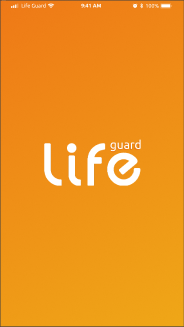
Splash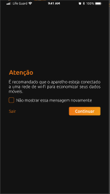
Aviso de Wi-Fi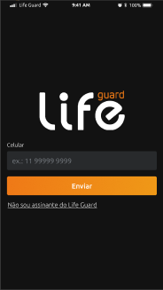
Entrada por celular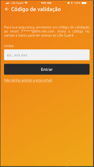
Código de validação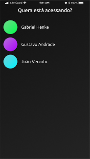
Quem está acessando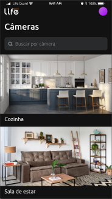
Lista de câmeras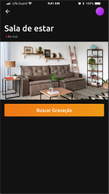
Player ao vivo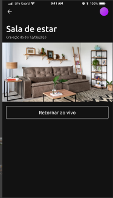
Gravação por data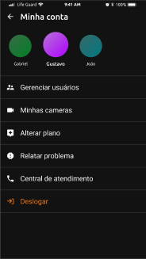
Menu da conta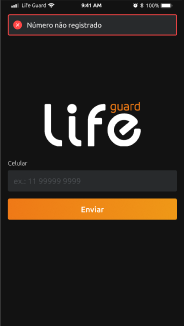
Número não registrado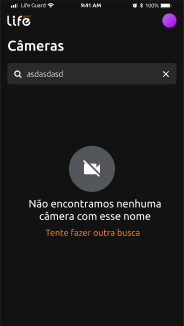
Busca sem resultado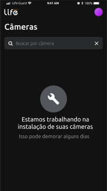
Aguardando instalação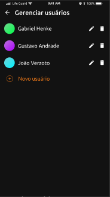
Gerenciar usuários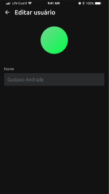
Editar usuárioO resultado
A entrega foi o protótipo navegável: 14 telas, do splash até a edição de um usuário, com os caminhos de erro e os estados vazios já resolvidos — o tipo de decisão que normalmente sobra para a fase de desenvolvimento e custa caro lá.
- Entrada sem senha: celular + código de validação
- Perfis múltiplos por assinatura, sem multiplicar contas
- Estados de erro, busca vazia e pré-instalação desenhados
- Componentes e espaçamentos pensados para virar React Native direto
O projeto parou no protótipo, e ele valeu como protótipo: deu à Life uma versão concreta do produto para discutir — escopo, esforço e cara da marca — em vez de uma descrição.